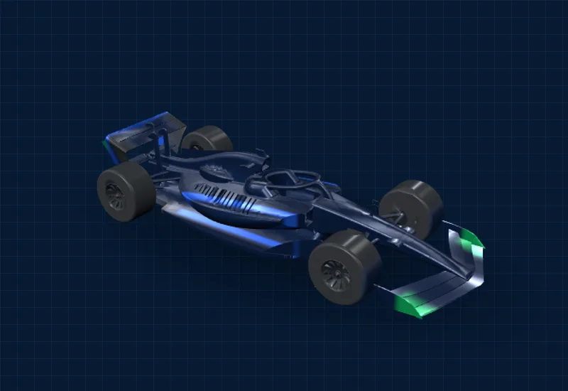

Ingeniería mexicana en la pista de STEM Racing México.
Diseñamos, fabricamos y corremos un auto de Fórmula 1 a escala en el Desafío STEM Racing México, la iniciativa educativa oficial de la Fórmula 1®. Categoría de Desarrollo · Preparatoria Celta, Querétaro.

BENCHMARK AERODINÁMICO // REF. CONCEPTUAL F1 Arrastra para girarConsulta las cotas reglamentarias.
Qué es el Desafío STEM Racing
Una competencia internacional avalada por la Fórmula 1® donde actuamos como una escudería real, de principio a fin.
Diseñamos un monoplaza impulsado por CO₂ utilizando herramientas de ingeniería profesional (CAD, CAM, CFD) bajo un reglamento técnico estricto.
Gestionamos la escudería como una empresa real: administramos presupuesto, identidad de marca y planes de negocio, buscando representar a México en la final mundial.
Meta de temporada: destacar en la fase regional y asegurar la clasificación a la Final Nacional de STEM Racing México 2027, con proyección a la Final Mundial FIA.
Lo que se evalúa
Ingeniería del auto, velocidad en pista, plan de negocios, identidad de marca (pit display) y presentación oral ante jueces.
Por qué importa
El reto integra modelado CAD, validación aerodinámica en CFD y manufactura de precisión en CNC, todo bajo un reglamento técnico oficial.
Ingeniería real, desde la preparatoria.
Diseñar, manufacturar y competir con un monoplaza a escala F1, desarrollando habilidades técnicas y de gestión a nivel profesional.
Una escudería que se sostiene temporada tras temporada.
Consolidar a Striker Racing como referente de Preparatoria Celta en STEM Racing México, con una base técnica y de gestión que se transmita a las siguientes generaciones del equipo y abra el camino a la Final Mundial FIA.
El camino hasta la final
Así avanza una escudería de la categoría Desarrollo durante la temporada 2026–2027.
Inscripción
Registro y pago de la cuota de participación. Formamos oficialmente la escudería.
Capacitación
Dic 2026 – abr 2027. Formación técnica y de negocios para todo el equipo.
Regional
Mar – abr 2027. Competimos contra escuderías de la zona Bajío-Norte.
Final nacional
Jun – jul 2027. Los mejores del país. Boleto directo a la final mundial.
La Escudería
Cinco integrantes y un mentor. Credenciales técnicas, competencias duras y el stack de herramientas del equipo.
Inversión & Patrocinios
Presupuesto transparente de la temporada, cuatro niveles de patrocinio y el configurador 3D de logos.